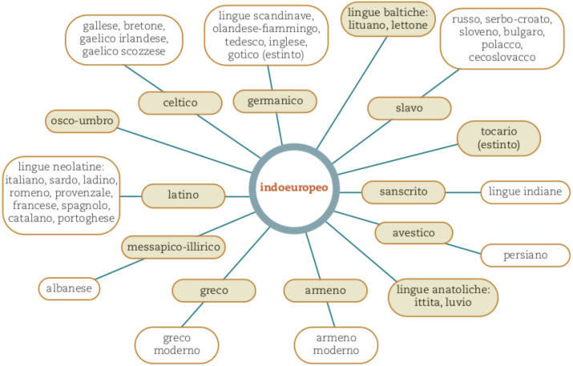

Le lingue indoeuropee
Il greco appartiene alla grande famiglia delle lingue indoeuropee, di cui possiamo vedere qui sotto l’ “albero genealogico”:
Delle lingue indoeuropee fanno parte:
il gruppo indo-ario (vedico, sanscrito – antiche lingue letterarie dell’India –; le lingue attuali dell’India settentrionale)
l’iranico (avestico – antico persiano –, le lingue moderne parlate in Iran e in Afghanistan; le lingue di minoranze nell’area compresa dall’Oman al Pakistan)
italico (latino e altre antiche lingue italiche, come l’osco-umbro; le moderne lingue neolatine: italiano, sardo, ladino, romeno, provenzale, francese, spagnolo, catalano, portoghese)
germanico (gotico, sassone; i moderni tedesco, inglese, olandese, norvegese, svedese, danese, islandese)
celtico (gallese, bretone, gaelico irlandese, gaelico scozzese)
balto-slavo (lingue baltiche: l’antico prussiano, i moderni lituano e lettone; lingue slave: antico slavo, sloveno, serbo, croato, bulgaro, macedone, polacco, ceco, slovacco, ucraino, russo, bielorusso)
armeno
messapico-illirico, parlato sulle due sponde dell’Adriatico meridionale, da cui forse è derivato il moderno albanese
ittita (parlato fra il 1700 e il 1200 a.C. nell’impero ittita dell’Asia anteriore corrispondente a parte della Turchia) e luvio (parlato in Anatolia dal II millennio a.C. all’VIII sec. a.C.)
tocario, diffuso fra il V e il X secolo d.C. nell’Asia centrale, esattamente nel Turkestan orientale
Il proto-indoeuropeo
Queste lingue sono legate fra loro da un rapporto di parentela, in quanto hanno un’origine comune, rappresentata non da una lingua madre, effettivamente parlata, ma da un’astrazione linguistica che gli studiosi chiamano “proto-indoeuropeo”, un ceppo comune non documentato, ma i cui tratti sono ricostruiti attraverso la comparazione fra le varie lingue storiche. Le corrispondenze fonetiche, morfologiche e lessicali fra le diverse lingue hanno infatti permesso ai linguisti di risalire a un insieme di radici indoeuropee e a un insieme di elementi grammaticali e lessicali aventi origini comuni. L’esempio del numerale “dieci” può servire per illustrare questo concetto. Il confronto fra il greco devka , il latino decem, il sanscrito daça, il germanico *tehun2 (da cui l’inglese ten e il tedesco zehn) fa risalire a una radice comune indoeuropea: *dekṃ Anche il confronto fra il greco εἰμί (“io sono”), il sanscrito asmi e l’ittita esmi fa presupporre una forma indoeuropea *esmi. Intorno al 4000 a.C. le popolazioni originarie dell’area sudorientale dell’odierna Russia, affini per lingua e istituzioni sociopolitiche, diedero inizio a un processo migratorio, sviluppatosi in varie ondate, che le portò a stabilirsi in regioni diverse dell’Asia e dell’Europa. Il contatto con le lingue delle popolazioni autoctone, le cosiddette “lingue di sostrato”, contribuì a una più profonda differenziazione rispetto alla matrice comune e alla formazione delle varie lingue indoeuropee antiche.
La radice indoeuropea *drem-, che indica l'azione di correre, risulta abbastanza produttiva in greco. A partire da questa sono derivati per esempio i termini δρόμος (il correre), δρομεύς (corridore), δρόμημα (corsa), l'aggettivo δρομάς (che corre veloce). In italiano la forma -dromo è usata spesso nei composti che indicano luoghi dove si corre o si fa correre, sull'esempio del greco ἱππόδρομος: autodromo, velodromo, pattinodromo ecc. Esiste poi un'altra parola italiana che contiene la forma - dromo, ossia palindromo (παλίνδρομος da πάλιν, «di nuovo, all'indietro», e δρόμος, «corsa») che indica quelle parole o frasi che corrono da sinistra verso destra e anche nel senso opposto, dando sempre la stessa sequenza come risultato, es. Anna, Otto, onorarono, la frase "i re sono seri".